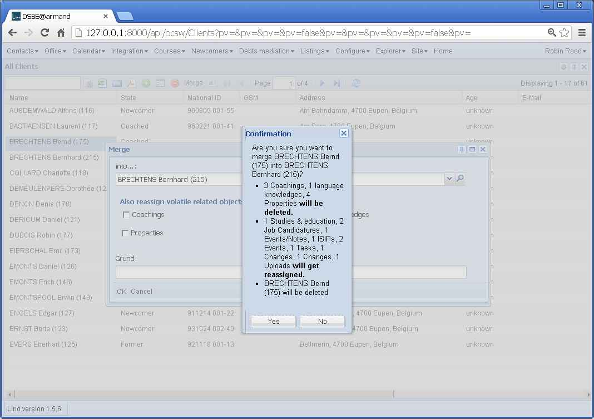

20130122¶
write() got an unexpected keyword argument ‘method’¶
Going to /plain/accounts/Group/1 caused a TypeError “write() got an unexpected keyword argument ‘method’” on a server with Python 2.6.
The method=”html” argument isn’t available in Python 2.6, only 2.7. It is useful to avoid side effects in case of empty elements: the default method (xml) writes an empty E.div() as “<div/>” while in HTML5 it must be “<div></div>” (the ending / is ignored).
Since I don’t want to upgrade the Python on that server and the “plain” view is anyway experimental, I simply remove it.
Merge two database rows¶
Just to have a trace of what I have been doing today...
merge_test.py:
from django.conf import settings
from lino.api import dd
from lino.core.merge import MergePlan
from lino.utils.xmlgen import html
settings.LINO.startup()
Client = dd.resolve_model('pcsw.Client')
obj = Client.objects.get(pk=175)
merge_to = Client.objects.get(pk=118)
mp = MergePlan(obj,merge_to)
print "MergePlan.logmsg():"
print mp.logmsg()
print "MergePlan.build_confirmation_message()"
print html.E.tostring(mp.build_confirmation_message())
Output:
$ python manage.py run merge_test.py --traceback
INFO Starting Lino...
INFO Analyzing models...
INFO Lino Site 'DSBE@armand' started. Languages: de, fr, en. 91 models, 290 actors.
INFO Using Lino Welfare 1.0.9, Lino 1.5.6, Django 1.6.dev20130119072716, Jinja 2.6,
Sphinx 1.1.3, python-dateutil 1.5, Cheetah 2.4.4, OdfPy ODFPY/0.9.4, docutils 0.10,
suds 0.4.1, PyYaml 3.08, Appy 0.8.0 (2011/12/15 22:41), Python 2.7.1, Silk Icons 1.3.
MergePlan.logmsg():
- 3 volatiles pcsw.Coaching rows using client : 67 68 69
- 1 volatiles cv.LanguageKnowledge rows using person : 115
- 4 volatiles properties.PersonProperty rows using person : 57 122 187 252
- 1 related jobs.Study rows using person : 3
- 2 related jobs.Candidature rows using person : 28 33
- 1 related notes.Note rows using project : 111
- 1 related isip.Contract rows using client : 12
- 2 related cal.Event rows using project : 58 122
- 1 related cal.Task rows using project : 15
- 1 generic_related lino.Change rows using object : 4
- 1 generic_related lino.Change rows using master : 4
- 1 generic_related uploads.Upload rows using owner : 2
MergePlan.build_confirmation_message()
<div class="htmlText"><p>Are you sure you want to merge BRECHTENS Bernd (175) into COLLARD Charlotte (118)?</p><ul><li>3 Begleitungen, 1 Sprachkenntnisse, 4 Eigenschaften <b>will be deleted.</b></li><li>1 Ausbildungen und Studien, 2 Stellenanfragen, 1 Ereignisse/Notizen, 1 VSEs,
2 Termine, 1 Aufgaben, 1 Änderungen, 1 Änderungen, 1 Uploads <b>will get reassigned.</b></li><li>BRECHTENS Bernd (175) will be deleted</li></ul></div>

{kind=link}